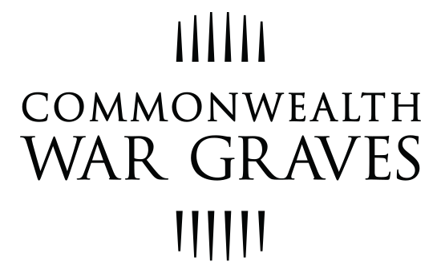
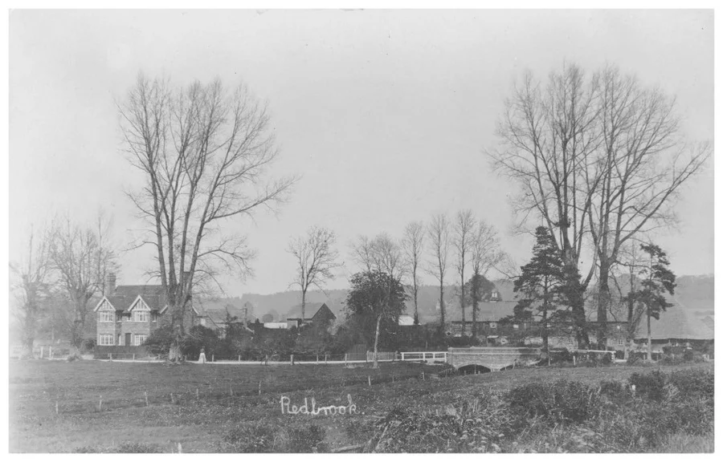
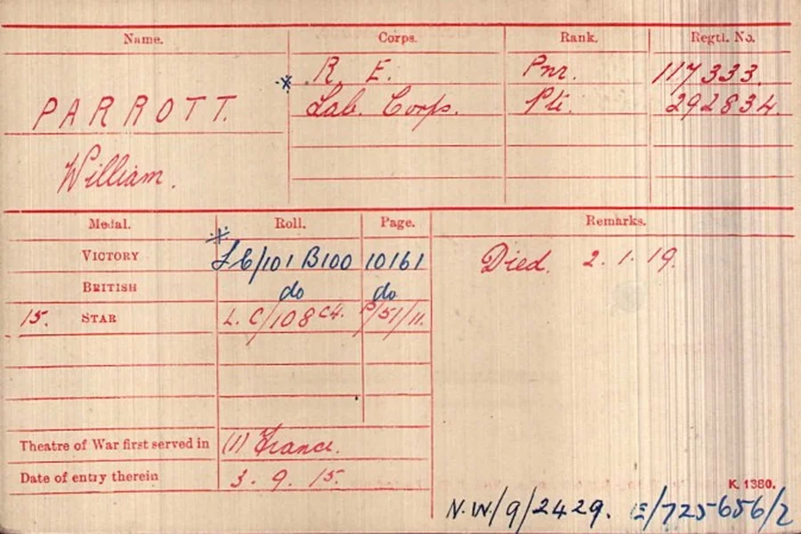
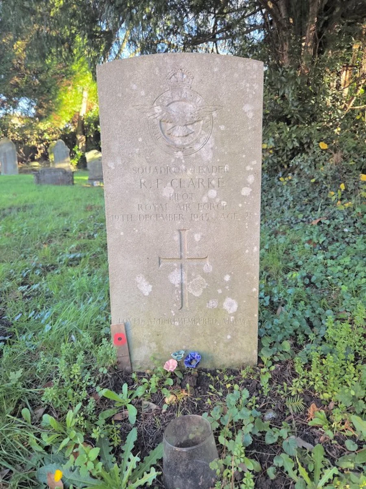
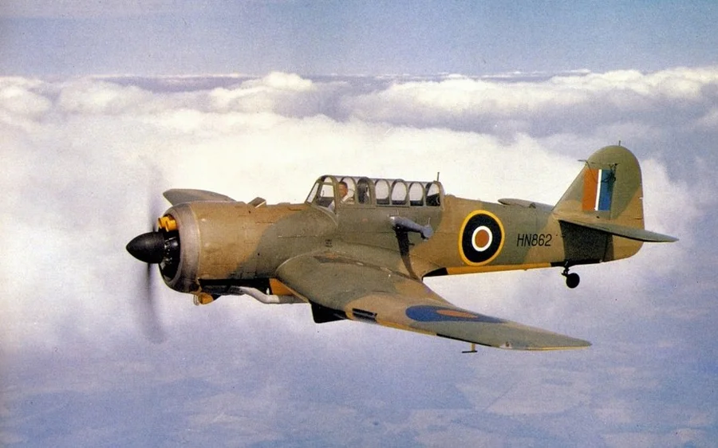

The Commonwealth War Graves Commission
by Adrian King

The Commonwealth War Graves Commission (CWGC) is an intergovernmental organisation of six independent member states whose principal function is to mark, record and maintain the graves and places of commemoration of Commonwealth of Nations military service members who died in the two World Wars. The Commission is also responsible for commemorating Commonwealth civilians who died as a result of enemy action during World War II. The Commission was founded by Sir Fabian Ware and constituted through Royal Charter in 1917 named the Imperial War Graves Commission. The change to the present name took place in 1960.
The Commission, as part of its mandate, is responsible for commemorating all Commonwealth war dead individually and equally. To this end the war dead are commemorated by name on a headstone at an identified site of a burial or on a memorial. War dead are commemorated uniformly and equally irrespective of military or civil rank, race, or creed.

The CWGC support graves in Alderholt Congregational Church and Alderholt St. James. They also support the graves of the village servicemen who were buried on the continent.
Alderholt Congregational Church
Lance Corporal William Parrott 117333, 6th Lab Bn Royal Engineers
Died Thursday 2nd January 1919 aged 50 yrs. A Lance Corporal in the Royal Engineers 6th Labour Battalion. He was born in 1867 in Woodgreen in Hampshire and baptised 8th Sept 1867 at Hale. He married Eva Mary Hutchins at Brown Street Baptist Church in Salisbury's Alderbury district on 11th Feb 1891.
Eva Curtis was born on 5th Oct 1853 in Alderholt, Dorset and died 9th Feb 1919 in Fordingbridge Workhouse Infirmary from Paraplegia and Bronchitis.
This was Eva’s third marriage previously being married to Charles Newman and William J. Hutchins. She had children by Charles Newman, Benjamin Charles Newman b: 1879 and Edward Huxford Newman b: 1881 both in Fordingbridge on the 1891 census.
William and Eva had three children. Eva Mary Parrott (1891-1970), William Fitz George Parrott (1892-92), and Blanche Ella Helena Gladys Parrott (1894-1972).
William was living with his wife and stepchildren in the Market Place in Fordingbridge on the 1891 census. Later with the family at Redbrook Farm in Fordingbridge on the 1901 and 1911 censuses where William was an Agricultural Labourer. On the 1911 census Eva is in the Fordingbridge Workhouse Infirmary and was wheelchair bound for many years.

William joined the army in 1914 as a Private (292834) to 705th Company Labour Corps. Later that year he transferred as a Pioneer (1173330) in the Royal Engineers 6th Labour Battalion and was later promoted to Lance Corporal. William served for three years in France but moved to the Royal Victoria Hospital at Netley near Southampton on 28th Nov 1918. He was allowed to return home to Alderholt on 7th Dec 1918 and stay with his daughter Blanche Hood, her husband and his-son-in law George, at the Salisbury Arms Farm over Christmas.
He relapsed almost immediately and died on Thursday 2nd January 1919 aged 50 from Influenzal Broncho/Pneumonia and Cardiac Failure. Herbert V. Rake MRCS signed the Death Certificate which was registered in Wimborne. William still had his house at Redbrook when he died.

He is buried in the Congregational Church graveyard and the stone is inscribed At Rest. His name is currently not on the War Memorial but that is perhaps because he was from Hampshire.
Squadron Leader Ronald Frederick Clarke 390063, Pilot, Royal Air Force
Died Wednesday 19th December 1945 aged 28 yrs.
Ronald was a flying officer during the war and may have flown from Ibsley. He didn’t like jets because they went too fast and didn’t have the equipment to tell you where you were before you got there. He was killed in a flying accident over Swansea on 19th December 1945 at the end of the war and is buried in the Alderholt Congregational Church graveyard with the inscription Loved and remembered always. He is not currently listed on the War Memorial.
Ronald was born on 26th April 1918 in Oxford. He joined the RAF as early as 1936 and trained as a Pilot Officer. His RAF service history was Acting Flying Officer 8th Sept 1939 then Flying Officer 8th Sept 1940. On 1st Dec 1941 he was promoted from a Flight Lieutenant to a Squadron Leader (Temp). In 1945 he was in 20 Maintenance Unit of the Maintenance Command and stationed at Aston Down near Stroud in Gloucestershire.
On 19th December 1945 he was ferrying a Miles M.50 Queen Martinet Reg RH123 belonging to 773 Squadron Fleet Air Arm Royal Navy from Woodley Aerodrome in Berkshire to RAF Manorbier in Pembrokeshire. Over Fairwood Common on the Gower the Queen Martinet had engine failure due to fuel problems. Ronald had to ditch in nearby Langland Bay and unfortunately he drowned before he could be rescued.

Ronald was the son of Frederick Wellesley and Grace Ada Clarke. Frederick Wellesley Clarke was a Scout Master and used to come to Alderholt with the Scouts while camping at a farm near the mill.
Ronald was married to Betty Scammell on 6th Dec 1940 at Alderholt and they had two children. Nigel Richard Geoffrey Clarke was born 27th Dec 1943 in Salisbury and died 25th Dec 2010 in Ringwood. Fay Clarke was born 16th May 1945 in Marlborough and died 1st Feb 2019 in Ringwood. Fay was a bridesmaid at Ken and Maureen Woodvine’s wedding on 20th October 1951.
After Ronald’s death Betty lived on her own in a property in the Ringwood area until her death. Betty who was born 25th Feb 1921 in Alderholt died 19th June 1989 in Bournemouth.
Hedley Deacon says
“I remember Ken Scammell and his wife, Elsie and their daughter Betty frequently worshipping at the new church in its early days. I recall that on occasions Ronald accompanied Betty in his RAF uniform to the services.”
Alderholt St. James
Sergeant Robert Emanuel Brine 3/3802, Hampshire Regiment
Died Wednesday 19th March 1919, aged 23 yrs.
Private Arthur Hayter 3258, Hampshire Regiment
Died Tuesday 17th June 1919, aged 29 yrs.
Private Montague James Burbage 7364061, Royal Army Medical Corps
Died Monday 5th May 1941, aged 23 yrs.
Hayter and Brine are engraved on the War Memorial.
The Miles M.25 Martinet
This was a target tug aircraft of the Royal Air Force and Fleet Air Arm that was in service during the Second World War. It was the first British aircraft to be designed specifically for target towing.
The Martinet was also developed into a relatively secret aircraft in response to Specification Q.10/43 which called for a radio-controlled target drone. This aircraft, designated the M.50 Queen Martinet was only produced in small numbers and its existence was a state secret until 1946. This was the aircraft that Ronald Clarke was flying manually. Several other derivatives of the basic airframe were also produced, including a dedicated glider tug and a trainer variant.

The M.50 variant conceived in 1943 was quickly prototyped and a modest production contract was issued to Miles leading to 69 examples being manufactured as a new builds. A further 17 aircraft were produced by the conversion of production Martinets. During its development and initial years of operation the existence of the Queen Martinet was classified being held on the UK Government's Secrets List. It was first publicly displayed at the Farnborough Airshow in June 1946 although details about the type remained protected for a number of years thereafter.
Source Wikipedia.